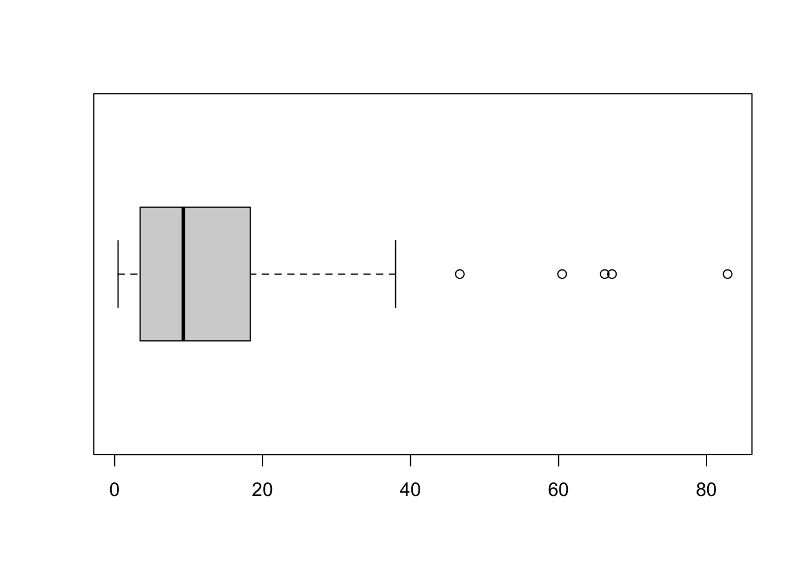

Working with R
Preliminary Stuff
Create a working directory (folder) for Week 7, create an RScript for Week 7, and set the working directory. In my case:
Load the data set Example.xlsx (taken from European Comission (n.d.)) into R:
Now copy/paste the entire RScript from Week 5 into the Week 7 RScript. Run the entire script by highlighting everything (“command”/“a” on a Mac and “ctrl”/“a” on Windows) and executing. You should now have a completely and correctly coded data frame that is ready to work with in your R Workspace. If not, give me a shout to sort out problems.
Descriptive Statistics
We have covered quite a large number of descriptive statistics, so far. These are:
- Mean
- Median
- Mode
- Standard Deviation
- Variance
- Quartiles and Percentiles
- Range
- Interquartile Range
They are a lot of effort to calculate by hand, especially for larger data sets, but R can do these with a few intuitive commands. First up is the mean.
Then the median:
You can get information on the quartiles (remember that the median is the second quartile), the mean, as well as the minimum and maximum through one, simple command:
summary(EU$pop18)
Min. 1st Qu. Median Mean 3rd Qu. Max.
475701 3781345 9300319 18311106 17766718 82850000 Let’s now move to measures of variability. First up is the range; you can either calculate this with two commands by finding out the minimum and maximum separately, or just ask R to give you both values straight away:
The stadard deviation is rather long-winded to calculate by hand, but the R command is short and sweet:
As you know, the variance is the squared standard deviation, but you can calculate it with its own command in R, too:
Descriptive Statistics
Now that you have all the relevant tools at hand, complete the following tasks:
- Generate descriptive statistics for 3 of our variables.
- Recode the variable ‘GDP_2015’ into a ordered factor called ‘gdp_level’ with three levels called “low”, “medium”, and “high” with cut-off points of your own choosing.
- Produce a tabulation for ‘gdp_level’.
Graphs
R is probably the most powerful statistics programme for creating graphs. As this is an introductory level module, and we only have so much time available in the seminars, I will only be able to introduce you to the most commonly used ones; in the first instance histograms and boxplots. I will then introduce you to the package ggplot2 which is simply the best invention since sliced bread, as it gives you pretty much endless optionality in customising graphs to show exactly what you want.
Whenever you produce a graph and you use it in an essay, your dissertation, or article, it is crucial that the graph is able to communicate its message independently from the text. So, a reader should be able to understand the graph and be able to appreciate fully its message without having to read the text. In a similar fashion, the text should always be written in such a way that a reader is able to understand it without having to look at the graph. This is a principle which equally applies to tables (more on this on PO12Q). If you do not follow this principle in the assessments on my modules, you will be marked down.
Chapter 4 in “The Visual Display of Quantitative Information” by Tufte (2001) is on the reading list as an essential item, but there are some more principles he sets out at the start of the book (p. 13) which are worthwhile repeating here:
Excellence in statistical graphics consists of complex ideas communicated with clarity, precision, and efficiency. Graphical displays should
- show the data
- induce the viewer to think about the substance rather than about methodology, graphic design, the technology of graphic production, or something else
- avoid distorting what the data have to say
- present many numbers in a small space
- make large data sets coherent
- encourage the eye to compare different pieces of data
- reveal the data at several levels of detail, from a broad overview to the fine structure
- serve a reasonably clear purpose: description, exploration, tabulation, or decoration
- be closely integrated with the statistical and verbal descriptions of a data set.
Graphics reveal data. Indeed graphics can be more precise and revealing than conventional statistical computations.
Basic Graphs
Let’s start with a histogram of the variable pop18. The range of the pop18 variable is about 82 million - this is rather unwieldy to imagine and also to put onto axes of graphs, as they would mostly consist of zeros. So let’s express the population of each countries in million instead:
We can now produce a histogram. Before doing this, it is sensible to think about the number of bars we want in the histogram. The smallest country has just shy of 500,000 inhabitants, whereas the largest has over 82 million. So, I would like the x-axis to run from zero to 100 (million) and divide this into 5 bars. Accordingly, we are introducing 4 breaks on the x-axis with the following command:

This is certainly a histogram, but it does not conform to the principle of graphs that they should be able to communicate their message independently, yet. Take the label of the x-axis, for example, what does EU$popmio mean? You and I know, but somebody who doesn’t know R language wouldn’t. We can tell R to adjust the axis label, as well as the main title of the histogram as follows:

Histograms
This is fine now. Ugly, but fine. I will show you how to do a boxplot next, and then I will take you through the process of making all this look a bit more jazzy. The command for the boxplot is very intuitive. The default in R is to arrange the boxplot vertically. I prefer them horizontally, and you can set this in an equally intuitive option.

You will recognise the descriptives we calculated earlier with the summary() function:
summary(EU$popmio)
Min. 1st Qu. Median Mean 3rd Qu. Max.
0.4757 3.7814 9.3003 18.3111 17.7667 82.8500 Explain the outliers on the right mathematically.
Advanced Graphs
The graphs we have produced so far are functional, but let’s be honest, they wouldn’t win any beauty contests. There is, as mentioned earlier, an amazing package called ggplot2 which changes this dramatically. You have already installed it as a part of the tidyverse. Otherwise, the function would be:
We can just load it:
The “gg” in ggplot2 stands for “grammar of graphs”. You will be familiar with the term “grammar”” from learning a language already. In this context, we use grammar to build sentences by choosing and arranging a variety different components, such as subjects, verbs and objects. If you know how to do this properly, you can express exactly what you want to say. The grammar of graphs adopts this logic and specifies a number of different components which allow you to create a graph which is able to communicate exactly what you wish to show.
ggplot2 has eight basic grammatical arguments:
| Data Frame | The data you wish to visualize. |
| Aesthetic Mappings | Here you specify how the data are assigned to colour, size, etc. For now, this is the variable for which we want to create a graphical distribution. |
| Geom | Short for “geometry”. Use a geom function to represent data points through geometric objects, such as points, lines, etc. Each function returns a layer. |
| Stat | You can include statistical summaries through this, such as smoothing, or regression lines. |
| Position | Position adjustments determine how to arrange geoms that would otherwise occupy the same space. |
| Facets | Facets divide a plot into sub-plots based on the values of one or more discrete variables. |
| Scale | Maps data values to the visual values of an aesthetic. For example female=pink, male=blue. |
| Coordinates | How do the numbers get translated onto the plot? We are not going to look at this on this module. |
I like to think of using these arguments like dressing myself in the morning. The minimum that common decency requires me to wear if I wish to leave the house is some underwear, some trousers, and a top. Depending on how I feel and what the weather is like, I can add more layers, like socks, a jumper, or a scarf. It is exactly the same with ggplot2. As a minimum to produce a plot you need a data frame, the aesthetic mapping and a geom. Once you have produced this minimalistic graph, you can modify it, by adding more components / arguments. As you can imagine the possibilities are almost endless, and we only have time to deal with the minimum here. This is not a problem, however, as most of the other grammatical arguments (Stats, Position, Facets and Scales) generally have sensible defaults.
So how does this work in practice? Let us reproduce the histogram of the age variable. We start by calling ggplot2 and advise the function which data frame we wish to use (EU). In a second step, we add a geometry – in our case geom_histogram. Within the geometry, we need to specify for which variable we wish to create a distribution, or in the language of ggplot2 which variable we wish to map to the geom as our Aesthetic. To produce 5 bars again, we specify a bandwith of 20 million (this refers to popmio).

Annoyingly, ggplot places the axis ticks in the middle of each bar which is WRONG for histograms. They need to align with the boundaries of the bars. We do this by telling R the boundary of the plot:

This has shifted the ticks to the left, but now R has decided to label the x-axis in steps of 25, whereas our bars have a bandwidth of 20. Once again, we have the variable name on the x-axis, instead of a label which anybody could understand. I also prefer “Frequency” on the y-axis, instead of “Count”. To address both of these concerns, we simply add a layer for each. First up are the axis ticks. Our variable is continuous, so we choose the scale_x_continuous option, and tell R to break the axis up into a sequence which starts with zero, ends at 100 and has steps of 20 in between. In the labs argument we adjust the labelling as intended:
ggplot(data=EU) +
geom_histogram(mapping=aes(popmio), binwidth = 20,
boundary = 0) +
scale_x_continuous(breaks = seq(0, 100, 20)) +
labs(x="Population (in million)", y="Frequency") +
theme_classic()
I have also removed the background in line with the principles set out by Tufte (2001, p. 96) by adding theme_classic(). This is it. A graph which can communicate its message independently, and which looks aesthetically pleasing.
In the present case we have the population, so displaying the frequency on the y-axis is sort of sensible, but usually we would be dealing with a sample. Here the count is not very telling and we would be using percentages, instead. Let’s do it!
Even More Advanced Graphs
Unfortunately, there is no easy, default way to do this in R, but necessitates a calculation within the ggplot command. Once more we call ggplot and use the EU data set, and select the geom geom_histogram. Again we specify the binwidth as 20 with a boundary of zero, and put popmio on the x-axis. Now comes the point where we need to do something new, because y is not equivalent to the frequency any more, but should be percentage. To achieve this we advise R to put the density there (which is the relative frequency from the the lecture in week 5), and multiply this density by 100 to get percentage. Nothing has changed on the scaling of the x-axis from the previous plot, so we can copy and paste the scale_x_continuous section, as well as the labelling of the x-axis. In this last step, we now also need to adjust the label of the y-axis, because this has now percentage on it, and not frequency. The result is this:
ggplot(data = EU) +
geom_histogram(binwidth = 20, boundary = 0,
aes(x= popmio,
y = (..count..)/sum(..count..)*100)) +
scale_x_continuous(breaks = seq(0, 100, 20)) +
labs(x="Population (in million)", y="percent") +
theme_classic()
Jazzy Graphs with GGPLOT
Organising Code in the RScript
Now is probably a good time to make you aware of how I have been organising code which runs over several lines. I could also have written the code of the last graph as
ggplot(data = EU) +
geom_histogram(binwidth = 20, boundary = 0, aes(x= popmio, y = (..count..)/sum(..count..)*100)) + scale_x_continuous(breaks = seq(0, 100, 20)) + labs(x="Population", y="percent") + theme_classic()but this would have made it rather difficult to disentangle and to spot the structure of the graph straight away. So it is also a good idea to structure the code in a logical way which allows a reader to understand it as easily as possible. R is very smart in the way it indents the next line after pressing “enter” in an RScript automatically to the appropriate position. You see for example that in
ggplot(data = EU) +
geom_histogram(binwidth = 20, boundary = 0,
aes(x= popmio,
y = (..count..)/sum(..count..)*100)) +
scale_x_continuous(breaks = seq(0, 100, 20)) +
labs(x="Population (in million)", y="percent") +
theme_classic()the aes which belongs to the geom_histogram layer is indented just so it starts flush with the first argument (binwidth) within this layer.
Exercises
Using these commands, and moving beyond with the help of today’s reading, complete the following tasks:
- Produce two base-R graphs of different types (e.g. histogram, bar chart, box-and-whisker plot) for separate variables in the EU data set.
- Produce two
ggplotgraphs of different types (e.g. histogram, bar chart, box-and-whisker plot) for separate variables in the EU data set. Google to find more geoms.
Captions for Tables and Figures in Word
In essays, your dissertation and in articles, you will have to refer to tables and figures in the text. Now, you can do this by writing “the figure below”. But this is not very elegant. Also, what happens if you change the layout and all of a sudden “the figure below” becomes “the figure above”. This not only causes additional work because you have to edit the text and check all references to tables and figures once you are done (which is tedious beyond description), but there is also the risk that you miss one or a few in the process.
MS Word has a nifty function that allows you to insert captions for figures and tables, and then to insert cross-references into the text which get updated automatically before you send the document to the printer. Here is how to do it:
Say, you have a figure inserted into Word. You now click on it, then hover over the bottom right-hand square, and right-click with your mouse. From the resulting context menu you select “Insert Caption”.

This results in the following window:

Select whether the item you want to describe is a figure, or a table. Then make sure you place the caption “below” the item (this is default). Then type your caption into the box at the top, such as “Figure 1: Skewness of Distributions”. Make sure the caption is telling. The reader needs to know from the caption what the figure or table is about. When you click OK, the document looks like this:

Now you start writing the text and come to the point where you refer to the figure in question. Here, all you have to do is to select “Insert” and “Cross-Reference””

and select the following options in the pop-up window:

Your text will then look like this:

You don’t have to worry now about the sequence of numbering any more. If you insert another figure above this one, and insert a cross-reference in the text again, the sequence is automatically updated and our former “Figure 1” becomes “Figure 2”. Tables and figures have separate sequences of numbering.
One last word on the display of data in tables: DO NOT screenshot tables from R and insert them into your presentations. They look ugly and unprofessional. Make the effort and create a proper table, either in Word or Excel and populate it manually with the data from R. The insertion of captions and cross-references is the same as described above.
Homework for Week 8
- Read the essential literature for the lecture. There is no separate reading for the seminar.
- Work through this week’s flashcards to familiarise yourself with the relevant R functions.
- Find an example for each NEW function and apply it in R to ensure it works
- Answer the following questions, using the data set from week 5 and submit the RScript on Moodle (find the link under Seminar for Week 8) by 5PM on Friday, 17 November:
- Complete the base-R and
ggplotgraphs from the Exercises. - Calculate GDP per capita in a new variable, and sort countries in descending order (for this it is ok to mix 2015 and 2018 data).
- Which country is the least and which is the most densely populated?
- Recode the
pop18variable into a categorical variable with low, medium, and high population (cut-off points are your choice).
- Complete the base-R and